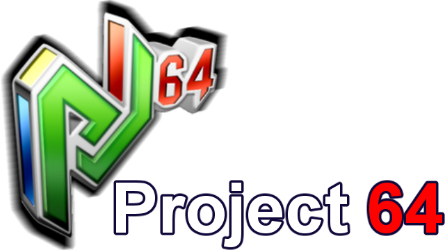

How to install
- Got to Project64's Homepage. Download the latest version for your system
- Follow the installation process
- Open Project64 (recommend creating a desktop shortcut)
Project64 can only run N64 games. In order to launch a game, you will need that game's rom file(ending in .z64). Getting these files is at to your descretion.
Pirating is not advised nor condoned. Follow along below if you own one.
- Once Project64 is open, click on File, then Open ROM
- Create a subdirectory for your ROM files. Click on the ROM file of your choice.
- Your game should be listed under Name highlighted in green. Click to launch the game.
To set up a controller
- Click on Options, then Input Settings
- Map the controls to your liking